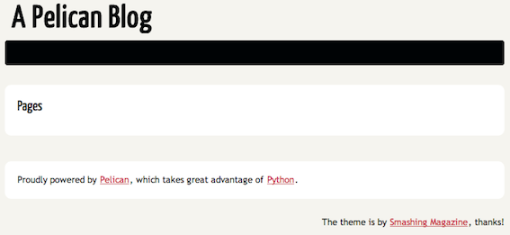

Pelican: a static blog generator for Pythonistas
30 March 2012
Hi!
I would like to start this blog speaking about Pelican, a nice Python project initiated by Alexis Metaireau. It allows you to generate a complete static blog/site from reStructuredText Templates. The blog you are reading just now is created in that way.
Why would you do that? First: for pythonic fun. Second: because of the static part: your site will be a bunch of static files (HTML, CSS...). This could sound strange in 2012 but I think is a good way to go if you want to keep it simple. In addition, it's extremely easy to host a static site for free, even maintaining your own domain name. (We will see how later)
That said, you will get in the box many functionalities you would expect from a blog site, including comments, socialize-buttons, pagination, tags, categories and so on.
reStructuredText
You can write your posts and pages using reStructuredText or markdown.
Probably you already know but in case you are wondering how a reStructuredText (rst) template looks like, this is an example of a blog entry written in rst:
Title of a post
###############
:category: programming
Subtitle
--------
Hi!
This is my first rst post!
And this is a link to a page_
.. _page: http://moliware.com/
reStructuredText is part of docutils, a powerful and open-source text processing system written in Python.
In an rst file you can specify links, insert images, code snippets and many other things. Here you have a good overview of all its functionalities.
As you may know, it's used for generating documentation. For example, with Sphinx you write your rst files once and then you can generate your documentation in multiple formats like PDF of HTML.
Installing Pelican
$ pip install pelican
If you're curious, you can review its code and clone the github repository.
Creating a site/blog
Once installed, to create a new site, create a folder and run the pelican command. For example:
$ mkdir my_blog $ pelican my_blog
This command will generate an output folder with an entire blog site with the default content. If you open the index.html file inside output you will see something similar to:
Writing posts
To start writing posts, do the following:
- Inside your site folder, create a new folder that will contain your rst sources:
$ cd my_blog
$ mkdir rst
- Create an rst file inside that directory with an example post:
$ vim rst/my_first_post.rst
Starting with Pelican
#####################
:date: 2012-03-30 23:47
:category: programming
:tags: python, blog, rst, pelican
:author: F\. Javier Alba
:excerpt: This is an excerpt of my post.
Introduction
------------
Hi!
This is my first rst post!
And this is a link to a page_
.. _page: http://moliware.com/
- Now, run pelican indicating your rst directory:
$ pelican rst/
- Open my_blog/output/index.html and you will see your post in html format:
Writing pages
Pelican also support regular pages.
Imagine you want an "About" page apart from your blog posts.
All you have to do is create a pages folder and create a new rst file with your page content:
$ mkdir rst/pages
$ vim rst/pages/about.rst
About me
########
:date: 2012-03-30 23:47
:author: F\. Javier Alba
This is an about page!
Run again the pelican script against your sources and it will generate also the new page:

Configuring your blog
The Pelican command optionally accepts a configuration file to customize some parts of your blog.
E.g: output folder, date formats, pagination, disqus comments, Twitter integration... all these aspects and several more can be configured in a python configuration file and are supported by the "official themes". (In fact, this will depend on the theme you are using. You can create your own pelican theme and choose what of these functionalities you will support.)
The following is an example of a Pelican configuration file:
DEFAULT_CATEGORY = 'Uncategorized'
TWITTER_USERNAME = 'fjavieralba'
PDF_GENERATOR = False
REVERSE_CATEGORY_ORDER = True
DEFAULT_PAGINATION = 10
FEED_RSS = 'feeds/all.rss.xml'
CATEGORY_FEED_RSS = 'feeds/%s.rss.xml'
SOCIAL = (('twitter', 'http://twitter.com/fjavieralba'),
('linkedIn', 'http://es.linkedin.com/in/fjavieralba/en'),
('github', 'http://github.com/fjavieralba'),)
OUTPUT_PATH = '/path/to/my_blog/output'
# static paths will be copied under the same name
STATIC_PATHS = ["images"]
To tell pelican to use your configuration file simply run the command with the -s option:
$ pelican rst/ -s <CONF_FILE>
You can see more details about pelican configuration in the officcial Pelican documentation
Extending Pelican
If you have some coding skills or are used to web templates engines like Jinja, you will find it easy to extend and adapt Pelican to fit your needs.
Modifying default themes
We have been using the default theme. But what if you want to customize a little bit more the look and feel of your blog?
One way of customization is via configuration file. But if you want to go further, you can directly change your theme files.
Themes usually consist in two parts: the templates folder and the static folder. static usually contains CSS files, images, etc. and templates contains .html files that are actually Jinja templates. Experimenting a bit and changing the CSS styles or the templates of an existing theme is sometimes all you need to personalize your new blog.
In this Github repo you can find all the "officcial" Pelican themes.
Creating your own theme
If you have a clear idea of how your site should be and look like, you can also create your own theme.
It's a good idea to start from a existing one. Again in the project documentation page you have more details on how to do that.
In fact, this blog is a Pelican site based on a theme I created (miserably copying the look and feel of Armin Ronacher's blog)
Deploying your site to Heroku or Github Pages for free
One of the advantages of having an static blog (apart from being the most modern of your colleagues) is that it's easy to host your blog/site for free.
Github Pages provides free hosting for static pages of projects or users in Github. They have a nice tutorial on how to create your static site, and it's also possible to use your own domain name. (This site is served in that way!)
You could also take advantage of the "free dino" that Heroku provides to serve your site. It only requires an easy extra step.